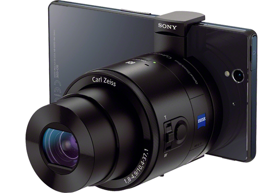

Amazing Sony devices you will want now
Posted at 13-09-2015For me, Sony is the coolest consumer electronics company in the world. In this post I will show some products that demonstrate why Sony has some special DNA.
"For all its successes (and failures) over the decades as a mainstream consumer electronics company, Sony has always cultivated an alter ego - a weird place where crazy, off-kilter designs and product ideas have been allowed to come to market, even when they're anything but a guaranteed commercial success. This is Weird Sony."
Sony BSP60 Smart Bluetooth Speaker
The BSP60 in action. Source: Sony Mobile, YouTube.Remember the Sony Rolly? The BSP60 is sort of a more functional successor to it. Where the Rolly was just an expensive music gadget, the BSP60 combines a Bluetooth speaker with an alarm clock and a personal assistant à la Amazon Echo. All of this in a cute little ball with an OLED screen and ear-like speakers covers.
DPTS1 Digital Paper
This is the future. Source: Yangcangghi.com
This device is purely functional and the name says it all. Sony's Digital Paper is like a tablet with an E-Reader screen and some nifty PDF annotation software. Where most e-readers only have a screen of around 7", the DPTS1 boasts a 13.3" screen, which is about the size of a sheet of A4 paper. The included stylus is supposed to feel just like a pen on normal paper, and compared to a conventional tablet the device weighs significantly less.
You can get yourself one for $800, but with ordinary tablets like the Apple iPad Pro costing more than that, that doesn't seem like that bad of a deal for such a unique device.
LSPX-W1S 4K Ultra Short Throw Projector
An 'Ultra Short Throw Projector' is basically a beamer that can be placed at less than a meter from the projction screen or wall. Most beamers are not stuff to get excited about, and while 4K projectors are impressive technology, these bulky devices usually look bad in your living room. The Ultra Short Throw Projector does however look stunning.Shaped like a futuristic piece of designer furniture, it is unintrusive when off, and a eye-catcher when on.
 It may not fit well in a baroque interior though. Source: Sony
It may not fit well in a baroque interior though. Source: Sony
At a whopping $50 000, if you can afford it, you can at least be sure that you're neighbour doesn't have one.
XSP-N1BT Smartphone Cradle Receiver
Demoing the cradle. Source: AndroidPolice, YouTube.The XSP-N1BT is a very advanced type of smartphone car mount. Why? Because it pairs with your phone over Bluetooth, and has proper physical buttons to control the phone as if it were a proper in car infotainment system. Admittedly, since Android Auto and Apple Carplay, the idea is a bit outdated, but the benefit of this double DIN unit is that it can be retrofitted in older cars.
If you don't have your smartphone nearby while going for a drive, the unit also functions as a normal car stereo.
Priced at $250, it's not particulary expensive either.
DSCQX-100 Lens-Style Camera
 Source: Sony
Chances are you did come across this innovative camera already, but it is too good to risk forgetting. Shaped like a DSLR camera lens, the lens-style camera is actually an RX100 camera without a display and physical controls. Instead, you pair the QX100 to your smartphone and control it via an app.
Price? $500
Did I miss a obscure/amazing/weird Sony product that is sold now? Let me know below: